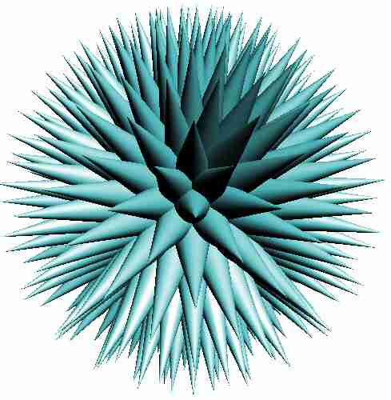
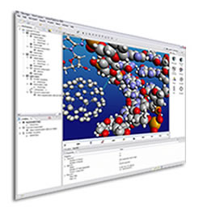

Designing Beautiful Software
Presenter Notes
Who am I?
Matthew Weier O'Phinney

- Project Lead, Zend Framework
- PHP Developer
- http://mwop.net/
- @weierophinney
Presenter Notes
Four Years Ago...
Presenter Notes
Presenter Notes
A ball of nails

Presenter Notes
What is Beauty
Presenter Notes
What is beautiful software design?
Presenter Notes
- Talk about Plato's ideas of the Good and Beauty
What is beautiful software design?
Presenter Notes
- We're not going to talk philosophy today, really
What is beautiful software design?

Presenter Notes
- We're talking about software, and how to make it beautiful
Software Evolution
Presenter Notes
Examining a real-world problem
Presenter Notes
- The Socratic method uses questions, and keeps questioning until truths are ferreted out. That's what we're going to do here.
Requirements
- The application needs to send email
- I know the sender is always the same
- I want to BCC an address for verification
Presenter Notes
1 function shop_mail($to, $subject, $body)
2 {
3 $headers = "From: shop@example.com\r\n"
4 .= "Bcc: shop-sent@example.com\r\n";
5 mail($to, $subject, $body, $headers);
6 }
Presenter Notes
Is it beautiful?
- It's succinct
Presenter Notes
Is it beautiful?
- It's succinct
- It prevents us having to specify
$headersmanually each call
Presenter Notes
Is it beautiful?
- It's succinct
- It prevents us having to specify
$headersmanually each call - It's a little more than a wrapper on
mail()
Presenter Notes
What if we introduce requirements?
- For instance, we add another shop on a different domain, using much (if not all) the same code.
Presenter Notes
What if we introduce requirements?
- For instance, we add another shop on a different domain, using much (if not all) the same code.
- Now the "From" and "Bcc" addresses need to be different.
Presenter Notes
New problems
- We don't want to change all the places in our code that call this function...
Presenter Notes
New problems
- We don't want to change all the places in our code that call this function...
- ... at least, not after this change.
Presenter Notes
New problems
- We don't want to change all the places in our code that call this function...
- ... at least, not after this change.
- So, let's introduce a "configuration" parameter.
Presenter Notes
1 <?php
2 function shop_mail($to, $subject, $body, $shop = 'original') {
3 switch ($shop) {
4 case: 'subdomain':
5 $from = 'shop@subdomain.example.com';
6 $bcc = 'shop-sent@subdomain.example.com';
7 break;
8 case: 'original':
9 default:
10 $from = 'shop@example.com';
11 $bcc = 'shop-sent@example.com';
12 break;
13 }
14
15 $headers = "From: $from\r\n"
16 .= "Bcc: $bcc\r\n";
17 mail($to, $subject, $body, $headers);
18 }
Presenter Notes
Is it beautiful?
- Switch statements will grow, and need to be documented.
Presenter Notes
Is it beautiful?
- Switch statements will grow, and need to be documented.
- We need to know what the value of that last argument will be.
Presenter Notes
Is it beautiful?
- Switch statements will grow, and need to be documented.
- We need to know what the value of that last argument will be.
- The number of arguments may not justify wrapping
mail()
Presenter Notes
Evolution: use classes
Presenter Notes
Base class
1 <?php
2 class ShopMail
3 {
4 protected static $from = 'shop@example.com';
5 protected static $bcc = 'shop-sent@example.com';
6
7 public static function send($to, $subject, $body)
8 {
9 $headers = "From: " . static::$from . "\r\n"
10 .= "Bcc: " . static::$bcc . "\r\n";
11 mail($to, $subject, $body, $headers);
12 }
13 }
Presenter Notes
- Statically done, allowing for Late Static Binding
Extending class
1 <?php
2 class SubdomainMail extends ShopMail
3 {
4 protected static $from = 'shop@subdomain.example.com';
5 protected static $bcc = 'shop-sent@subdomain.example.com';
6 }
Presenter Notes
- We extend, and modify the static members
Usage
1 <?php
2 define('MYENV', 'Subdomain');
3
4 $mailer = MYENV . 'Mail::send';
5 call_user_func($mailer, $to, $subject, $body);
Presenter Notes
- Dirt-simple. In fact, in PHP 5.4, we can simply call
$mailer($to, $subect, $body)
Is it beautiful?
- Requires extension
Presenter Notes
Is it beautiful?
- Requires extension
- Strategy selection requires knowledge of environment
Presenter Notes
Is it beautiful?
- Requires extension
- Strategy selection requires knowledge of environment
- Debugging requires knowledge of environment
Presenter Notes
Evolution: use configuration
Presenter Notes
- Configuration makes it possible to program once, while still altering behavior
1 <?php
2 $config = new ArrayObject(array(), ArrayObject::ARRAY_AS_PROPS);
3 $config->env = "Subdomain';
4
5 $mailer = $config->env . 'Mail::send';
6 call_user_func($mailer, $to, $subject, $body);
Presenter Notes
Is it beautiful?
- Would be easier to just indicate the class to use, and have it be the same throughout the application(s).
Presenter Notes
Is it beautiful?
- Would be easier to just indicate the class to use, and have it be the same throughout the application(s).
- What if I have a new requirement, such as sending HTML mails?
Presenter Notes
Evolution: use objects
Presenter Notes
- Up until now, we've been looking at class-oriented programming
- Now we'll look at object-oriented programming.
- There's a difference
1 <?php
2 class Mailer
3 {
4 protected $from = 'shop@example.com';
5 protected $bcc = 'shop-sent@example.com';
6 protected $contentType = 'text/plain';
7
8 public function setFrom($from) { ... }
9 public function setBcc($bcc) { ... }
10 public function setContentType($type) { ... }
11 public function send($to, $subject, $body)
12 {
13 $headers = "From: " . $this->from . "\r\n"
14 .= "Bcc: " . $this->bcc . "\r\n"
15 .= "Content-Type: " . $this->contentType . "\r\n";
16 mail($to, $subject, $body, $headers);
17 }
18 }
Presenter Notes
1 <?php
2 $mailer = new Mailer();
3 $mailer->setFrom($config->from)
4 ->setBcc($config->bcc)
5 ->setContentType('text/html');
6 $mailer->send($to, $subject, $body);
Presenter Notes
Is it beautiful?
- Better, but not great
Presenter Notes
Is it beautiful?
- Better, but not great
- Specific headers are hard-coded
Presenter Notes
Is it beautiful?
- Better, but not great
- Specific headers are hard-coded
- What if we don't want to use
mail()?
Presenter Notes
- For instance, we may want to use SMTP
- Or, due to volume, push to a queue
Take a shower
Presenter Notes
- When you need to think, or design, the best thing you can do is step away from your computer.
- One agile practice is to take a shower. Idea is to do something not programming, in order to spur the creative thinking processes.
We've identified several needs
- Configurable, arbitrary headers
- Configurable, arbitrary tranports
Presenter Notes
Evolution: use composition and interfaces
Presenter Notes
- Hollywood principle
- Interfaces allow substitution
1 <?php
2 interface MailTransport
3 {
4 public function send($to, $subject, $body, $headers);
5 }
6
7 class MailHeaders extends ArrayObject
8 {
9 public function toString()
10 {
11 $headers = '';
12 foreach ($this as $header => $value) {
13 $headers .= $header . ': ' . $value . "\r\n";
14 }
15 return $headers;
16 }
17 }
Presenter Notes
1 <?php
2 class Mailer
3 {
4 protected $headers, $transport;
5
6 public function setHeaders(MailHeaders $headers) {
7 $this->headers = $headers;
8 return $this;
9 }
10
11 public function getHeaders() {
12 return $this->headers;
13 }
14
15 public function setTransport(MailTransport $transport) {
16 $this->transport = $transport;
17 return $this;
18 }
19
20 /* ... */
21 }
Presenter Notes
1 <?php
2 class Mailer
3 {
4 protected $headers, $transport;
5
6 public function \__construct(MailTransport $transport)
7 {
8 $this->setTransport($transport);
9 $this->setHeaders(new MailHeaders());
10 }
11 public function send($to, $subject, $body)
12 {
13 $this->transport->send(
14 $to, $subject, $body,
15 $this->headers->toString()
16 );
17 }
18 }
Presenter Notes
1 <?php
2 $mailer = new Mailer(new SmtpTransport);
3 $headers = new MailHeaders();
4 // or $headers = $mailer->getHeaders();
5
6 $headers['From'] = $config->from;
7 $headers['Bcc'] = $config->bcc;
8 $headers['Content-Type'] = 'text/html';
9 $mailer->setHeaders($headers) // if instantiated separately
10 ->send($to, $subject, $body);
Presenter Notes
Is it beautiful?
- Headers management and serialization is self-contained
Presenter Notes
Is it beautiful?
- Headers management and serialization is self-contained
- Sending is separate from message composition
Presenter Notes
Problems
- No validation or normalization of header keys
- No validation of header values
- Should a message send itself? or should we pass a message to the transport?
Presenter Notes
Evolution: object relations
Presenter Notes
- Objects should do one thing, and one thing well
- Use objects as messages between objects
Presenter Notes
Message
1 <?php
2 interface MailMessage
3 {
4 public function setTo($to);
5 public function setSubject($subject);
6 public function setBody($body);
7 public function setHeaders(MailHeaders $headers);
8
9 public function getTo();
10 public function getSubject();
11 public function getBody();
12 public function getHeaders();
13 }
Presenter Notes
- The mail message is now simply a value object
- Note that it composes headers
Headers and Transport
1 <?php
2 interface MailHeaders
3 {
4 public function addHeader($header, $value);
5 public function toString();
6 }
7
8 interface MailTransport
9 {
10 public function send(MailMessage $message);
11 }
Presenter Notes
- Instead of an ArrayObject, we have an object with a dedicated method for adding headers, allowing us to validate them.
- toString() allows us to serialize the headers into a format that the transport can use
- The mail transport sends a message
Usage
1 <?php
2 $message = new Message();
3 $headers = new MessageHeaders();
4 $headers->addHeader('From', $from)
5 ->addHeader('Content-Type', 'text/html');
6 $message->setTo($to)
7 ->setSubject($subject)
8 ->setBody($body)
9 ->setHeaders($headers);
10 $transport = new SmtpTransport($config->transport);
11 $transport->send($message);
Presenter Notes
Is it beautiful?
- Headers can now potentially have validation and normalization...
Presenter Notes
Is it beautiful?
- Headers can now potentially have validation and normalization...
- ... and implementation can be varied if necessary.
Presenter Notes
Is it beautiful?
- Headers can now potentially have validation and normalization...
- ... and implementation can be varied if necessary.
- The message is self-contained, and contains all metadata related to it.
Presenter Notes
Is it beautiful?
- Headers can now potentially have validation and normalization...
- ... and implementation can be varied if necessary.
- The message is self-contained, and contains all metadata related to it.
- The mail transport accepts a message, and determines what to use from it, and how.
Presenter Notes
What are we really asking?
Presenter Notes
- I've used the phrase "Is it beautiful?" throughout as a meme.
- It's now time to figure out what we're really asking.
Is it beautiful...
- Can I maintain it?
Presenter Notes
- The new solution allows for substitution.
- Which means we can mock things.
- Which means we can test things.
Is it beautiful...
- Can I maintain it?
- Can I change behavior when needed?
Presenter Notes
- The new solution allows for substitution.
- Which allows me to provide an alternate implementation of the interface.
- Which means I can change behavior.
Other ideas to investigate
- SOLID principles
Presenter Notes
- eek!
Other ideas to investigate
- Aspect Oriented Programming and Event-Driven Programming
Presenter Notes
- Allows providing inflection points within code
- Introduce cross-cutting concerns
- or allow replacing or short-circuiting implementation
Other ideas to investigate
- Testing, testing, testing!
- Define requirements as tests
- Exercise your API before you write it
- Gain confidence in your code
Presenter Notes
- If you can't test it, you can't maintain it, and you likely can't alter behavior easily.
- Investigate continuous integration and deployment
Other ideas to investigate
- Adopt a coding standard
Presenter Notes
- Seems basic, but it's critical to making code easy to read, both for you and your team
Trade offs
You can always write shorter code. The trade off is re-use.
- The original code sample was fine. But we couldn't:
- configure it
- change its behavior
Presenter Notes
Trade offs
You can always write shorter code. The trade off is re-use.
- The original code sample was fine. But we couldn't:
- configure it
- change its behavior
- You end up writing the same code over and over.
Presenter Notes
Trade offs
Writing robust code usually requires some verbosity.
- Separating concerns leads to a proliferation of objects and files.
Presenter Notes
Trade offs
Writing robust code usually requires some verbosity.
- Separating concerns leads to a proliferation of objects and files.
- Get over it.
Presenter Notes
Trade offs
Writing robust code usually requires some verbosity.
- Separating concerns leads to a proliferation of objects and files.
- Get over it.
- It's easier to digest small bites than it is an entire roast.
Presenter Notes
Trade offs
Configuration can be either inline, or from a container.
- Inline is nice, but difficult to swap out.
Presenter Notes
Trade offs
Configuration can be either inline, or from a container.
- Inline is nice, but difficult to swap out.
- Containers are nice, but now you need to pass the container around.
Presenter Notes
Closing thoughts
- Balls of nails get the job done.
- So do precision instruments.
Presenter Notes
Closing thoughts

- Think about long-term maintainability
- Consider re-usability
Presenter Notes
Thank You!
- Feedback:
- https://joind.in/6231
- https://twitter.com/weierophinney
- https://github.com/weierophinney